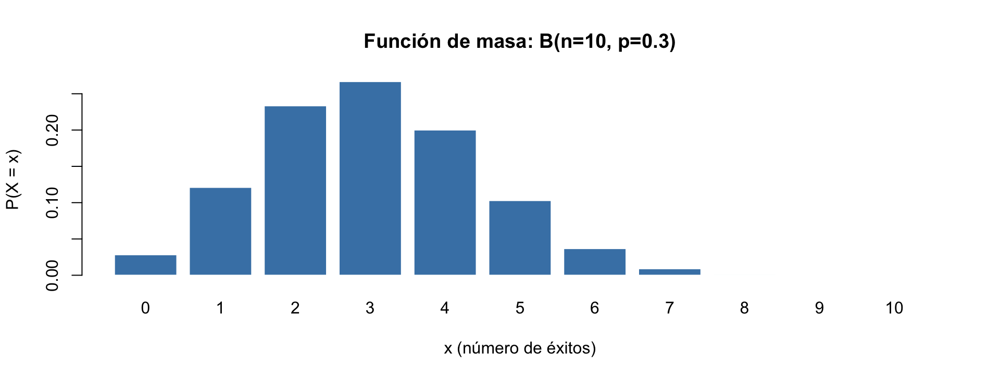
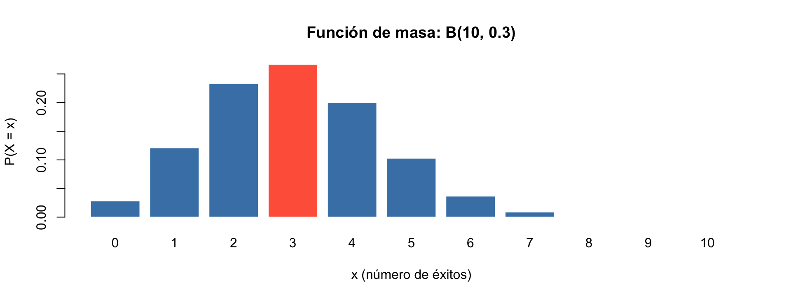
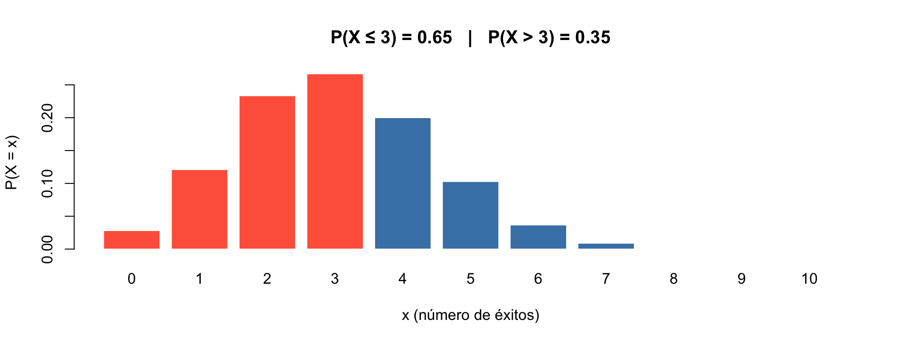

Inferencia Estadística
Unidad 1 — Distribuciones de Probabilidad
2025-12-31
¿De qué trata esta materia?
Los fenómenos económicos son inciertos por naturaleza.
Los mercados, los salarios, el consumo — ninguno sigue un patrón determinista.
La Inferencia Estadística nos da las herramientas para:
pasar de lo que observamos (la muestra) a lo que queremos saber (la población) — con rigor científico.
¿Dónde estamos en la carrera?
Introducción a la Estadística \(\longrightarrow\) Inferencia Estadística \(\longrightarrow\) Econometría
← acá estamos →
Herramientas del curso
R
- Lenguaje creado por y para estadísticos
- Gratuito y de código abierto
- Ecosistema CRAN: miles de paquetes desarrollados por la comunidad científica para casi cualquier método estadístico
- En este curso: simulaciones, visualización de distribuciones, demostración de propiedades de estimadores
Stata
- Estándar en universidades argentinas y latinoamericanas
- Software pago → implementaciones validadas y trazables: las actualizaciones de métodos pasan por un proceso de revisión riguroso
- En este curso: análisis con bases de datos reales (encuestas de hogares, datos económicos)
Al final del día, son herramientas. Lo valioso es saber qué preguntar y cómo interpretar. Eso después se adapta a Python, Julia, o lo que venga.
R base
R base es todo lo que viene instalado con R, sin necesidad de agregar nada.
En esta materia vamos a trabajar principalmente con R base porque:
- Es suficiente para todo lo que necesitamos: simulaciones, distribuciones, estimadores
- Entender R base primero hace que después cualquier librería sea más fácil de aprender
- Los gráficos de R base son simples, rápidos y claros para demostrar conceptos
Las funciones generales que más vamos a usar:
| Función | Para qué sirve |
|---|---|
mean(), var(), sd() |
Estadísticos básicos |
plot(), hist(), curve() |
Gráficos |
replicate(), sample() |
Simulaciones |
set.seed() |
Reproducibilidad de resultados aleatorios |
R base: funciones de distribución
R tiene un sistema consistente para cada distribución — cuatro prefijos, siempre el mismo patrón:
| Prefijo | Qué calcula |
|---|---|
d |
Densidad / probabilidad puntual |
p |
Probabilidad acumulada \(P(X \leq x)\) |
q |
Cuantil: dado \(p\), ¿qué valor? |
r |
Números aleatorios de esa distribución |
R base: funciones de distribución
Distribuciones discretas y continuas más usadas en la materia:
| Normal | Binomial | |
|---|---|---|
d |
dnorm(x, mean, sd) |
dbinom(x, size, prob) |
p |
pnorm(q, mean, sd) |
pbinom(q, size, prob) |
q |
qnorm(p, mean, sd) |
qbinom(p, size, prob) |
r |
rnorm(n, mean, sd) |
rbinom(n, size, prob) |
R base: funciones de distribución
Distribuciones muestrales derivadas de la Normal:
| t de Student | Chi-cuadrado | F de Fisher | |
|---|---|---|---|
d |
dt(x, df) |
dchisq(x, df) |
df(x, df1, df2) |
p |
pt(q, df) |
pchisq(q, df) |
pf(q, df1, df2) |
q |
qt(p, df) |
qchisq(p, df) |
qf(p, df1, df2) |
r |
rt(n, df) |
rchisq(n, df) |
rf(n, df1, df2) |
Aprendés el patrón una vez y lo usás para todas. La aplicación concreta la vemos con cada distribución.
R: cómo funciona
R es un lenguaje interpretado — las instrucciones se ejecutan línea por línea, en el momento en que las escribís.
A diferencia de lenguajes compilados (como C o Fortran), no hay que “traducir” todo el programa antes de correrlo. Escribís, ejecutás, ves el resultado.
La memoria en R:
- Todo lo que creás (vectores, modelos, gráficos) vive en la RAM mientras la sesión está abierta
- Al cerrar R, todo se pierde — a menos que lo guardes en un archivo
- Objetos grandes consumen memoria: si trabajamos con bases de datos muy grandes, hay que tenerlo en cuenta
ls()muestra qué tenés en memoria;rm(objeto)lo elimina
Es como un excel que se resetea cuando la cerrás — todo lo importante hay que guardarlo explícitamente (script+resultados).
R: lo básico antes de arrancar
R distingue mayúsculas de minúsculas — case sensitive
¿Qué muestran x y X? ¿Son la misma variable?
[1] 10[1] 99
xyXson dos variables distintas. Un error muy común al principio.
R: asignación y sobreescritura
Asignamos con <-. Si usamos el mismo nombre, el valor anterior se pisa.
¿Cuál es el valor final de ingreso?
[1] 5000[1] 5500No hay “deshacer” en R — si sobreescribís una variable, el valor anterior se pierde.
R: operaciones aritméticas
R funciona como una calculadora. Las operaciones básicas:
| Operación | Símbolo | Ejemplo |
|---|---|---|
| Suma | + |
3 + 2 |
| Resta | - |
10 - 4 |
| Multiplicación | * |
6 * 7 |
| División | / |
15 / 4 |
| Potencia | ^ |
2 ^ 8 |
| Raíz cuadrada | sqrt() |
sqrt(144) |
¿Qué da cada línea?
[1] 100[1] 1024[1] 15R: vectores
Un vector es la estructura más básica de R — una secuencia de valores del mismo tipo.
Se crea con c() (combine):
¿Qué muestra edades?
[1] 22 19 25 21 23Podemos aplicar operaciones sobre todo el vector a la vez:
[1] 23 20 26 22 24[1] 22R: indexación de vectores
Para acceder a elementos usamos corchetes [ ]. El índice arranca en 1.
¿Qué devuelve cada línea?
[1] 22[1] 25[1] 19 25 21[1] 19 25 21 23En R los índices arrancan en 1, no en 0 como en Python.
R: modificar elementos de un vector
Podemos sobreescribir un elemento específico usando su índice:
¿Qué cambió en el vector?
[1] 22 19 25 21 23[1] 22 99 25 21 23Solo se modifica la posición indicada. El resto del vector queda igual.
R: tipos de vectores
Un vector solo puede contener un tipo de dato. Los más usados en esta materia:
[1] "numeric"[1] "character"[1] "logical"¿Qué pasa si mezclamos tipos? R convierte todo al tipo más general — coerción implícita:
[1] "1" "2" "tres"
1y2se convirtieron en"1"y"2". Un error silencioso muy común.
R: vectores vs. listas y data frames
| Vector | Lista | Data Frame | |
|---|---|---|---|
| Tipos de datos | Un solo tipo | Tipos mixtos | Tipos mixtos por columna |
| Estructura | Unidimensional | Flexible | Tabular (filas × columnas) |
| Ejemplo de uso | Simulación, cálculos | Resultados de modelos | Bases de datos |
En esta materia vamos a trabajar principalmente con:
- Vectores → simulaciones, distribuciones, cálculos
- Data frames → cuando cargamos bases de datos reales
Las listas aparecen “por detrás” cuando corremos modelos — no las armamos a mano, pero es útil saber que existen.
R: for loops — la idea
Un for loop repite una instrucción para cada valor de una secuencia.
variabletoma cada valor desecuenciaen orden- Todo lo que está entre
{ }se ejecuta una vez por cada valor - La indentación no es obligatoria en R, pero es buena práctica — hace el código legible
¿Qué imprime este loop?
[1] 1
[1] 2
[1] 3
[1] 4
[1] 5R: for loops — acumular resultados
El uso más común: guardar resultados dentro de un vector.
¿Qué contiene resultados al final?
[1] 1 4 9 16 25Este patrón — vector vacío → loop → guardar en cada posición — es la base de todas las simulaciones que vamos a hacer en la materia.
R: for loops — ejemplo aplicado
Ingresos de 5 hogares: queremos calcular el ingreso per cápita de cada uno.
¿Qué valor tiene per_capita[3]?
[1] 20000.00 22500.00 24000.00 30000.00 31666.67R: for loops anidados
Un loop anidado es un loop dentro de otro. El loop interno se ejecuta completo por cada iteración del externo.
- El loop exterior controla la “fila”
- El loop interior controla la “columna”
- Total de iteraciones =
largo(exterior)×largo(interior)
Útil cuando queremos explorar combinaciones de parámetros — algo muy frecuente en inferencia.
R: for loops anidados — ejemplo
¿Cómo cambia la varianza del estimador según el tamaño de muestra?
Simulamos la media muestral para distintos \(n\), repitiendo 500 veces cada uno:
set.seed(42)
tamanios <- c(10, 50, 200)
B <- 500 # repeticiones por cada n
varianzas <- c()
for (i in 1:length(tamanios)) {
medias <- c()
n <- tamanios[i]
for (b in 1:B) {
muestra <- rnorm(n, mean = 0, sd = 1)
medias[b] <- mean(muestra) # media de cada muestra
}
varianzas[i] <- var(medias) # varianza de las B medias
}
data.frame(n = tamanios, var_media = round(varianzas, 4))R: for loops anidados — ejemplo
¿Qué esperamos que pase con la varianza a medida que \(n\) crece?
n var_media
1 10 0.1017
2 50 0.0208
3 200 0.0051A medida que \(n\) crece, la varianza de la media muestral cae — porque \(\text{Var}(\bar{X}) = \sigma^2/n\).
Instalar y cargar librerías
R base se puede extender con librerías. Para instalar:
Para usar en cada sesión:
tidyverse es una colección de librerías para análisis de datos. Las más conocidas:
| Librería | Para qué sirve |
|---|---|
ggplot2 |
Gráficos declarativos y estéticos |
dplyr |
Manipulación de datos: filter(), mutate(), select() |
tidyr |
Reorganizar estructuras de datos |
En esta materia no vamos a usar tidyverse — trabajamos con R base. Pero es bueno saber que existe.
El operador pipe %>%
El operador %>% (de tidyverse) pasa el resultado de una expresión como primer argumento de la siguiente. Se lee como “y luego”:
Desde R 4.1 existe también el pipe nativo
|>que funciona de manera similar sin cargar ninguna librería.
Gráficos con R base: parámetros
Las funciones de distribución y los gráficos van de la mano:
| Función | ¿Qué graficamos? | Cómo |
|---|---|---|
d (densidad) |
La curva de la distribución | curve(dnorm(x), ...) |
p (acumulada) |
La función de distribución acumulada | curve(pnorm(x), ...) |
r (aleatorios) |
Cómo se ven los datos simulados | hist(rnorm(n), ...) |
q (cuantil) |
Se usa para marcar puntos críticos | abline(v = qnorm(0.95)) |
Gráficos con R base: parámetros
Parámetros principales de plot():
| Parámetro | Qué controla | Ejemplo |
|---|---|---|
main |
Título | main = "Mi gráfico" |
xlab, ylab |
Etiquetas de ejes | xlab = "Ingreso" |
col |
Color | col = "steelblue" |
type |
Tipo de gráfico | "p" puntos, "l" línea, "b" ambos |
pch |
Forma del punto | pch = 16 (círculo sólido) |
lwd |
Grosor de línea | lwd = 2 |
xlim, ylim |
Rango de ejes | xlim = c(0, 100) |
Scatter y líneas con plot()
Diagrama de dispersión
Histogramas y densidades
Histograma con hist()
lwdcontrola el grosor de la línea. Estos dos gráficos los vamos a usar todo el cuatrimestre.
ggplot2: mismo gráfico, otra estética
R base
Más código, más control. En clase usamos R base — es más directo para demostrar conceptos.
Distribuciones de Probabilidad
Variable Aleatoria
Según Wooldridge, una Variable Aleatoria es aquella que toma un valor numérico determinado por el resultado de un experimento.
Experimento: un procedimiento que puede repetirse y tiene un conjunto bien definido de resultados — lanzar una moneda, encuestar hogares, registrar el resultado de una votación.
Notación
- Las VA se denotan con mayúsculas: \(W, X, Y, Z\)
- Sus valores particulares con minúsculas: \(w, x, y, z\)
- Para colecciones: \(X_1, X_2, \ldots, X_{20}\) — por ejemplo, los ingresos de 20 hogares
La distinción entre \(X\) (la variable) y \(x\) (un valor concreto que toma) no es solo notación — refleja la diferencia entre el mecanismo aleatorio y su realización.
VA Discretas
Una VA es discreta si toma una cantidad contable (discreta) de valores.
Función de masa de probabilidad (fmp)
Resume los valores posibles y sus probabilidades:
\[f(x_j) = P(X = x_j)\]
Regla fundamental: las probabilidades deben sumar exactamente 1:
\[\sum_j P(X = x_j) = 1\]
Ejemplo: \(X\) = número hogar en mora de una cartera de 50 préstamos. Toma valores \(0, 1, 2, \ldots, 50\) — contables, discretos.
Discretas vs. Continuas
| VA Discreta (ej: Binomial) | VA Continua (ej: Normal) | |
|---|---|---|
| Valores posibles | Puntos aislados: \(0, 1, 2, \ldots\) | Cualquier valor en un intervalo real |
| Probabilidad puntual | \(P(X = x)\) puede ser \(> 0\) | \(P(X = x) = 0\) para todo \(x\) |
| ¿Cómo se mide? | Sumamos probabilidades individuales | Calculamos áreas bajo la curva |
| Visualización | Barras / histograma | Curva suave |
Ejemplos económicos
- Discreta: ¿Cuántos préstamos de una cartera entran en mora? → contamos unidades
- Continua: ¿Cuál es la probabilidad de que la tasa de desempleo sea menor al 5%? → cualquier decimal es posible
La Función de Distribución Acumulada
La FDA \(F(x)\) es el puente entre variables discretas y continuas:
\[F(x) \equiv P(X \leq x)\]
Siempre mide la probabilidad de que la variable tome un valor menor o igual a \(x\).
En variables discretas
Se obtiene sumando las probabilidades individuales hasta \(x\):
\[F(x) = \sum_{x_j \leq x} P(X = x_j)\]
En variables continuas
Es el área bajo la curva de densidad a la izquierda de \(x\):
\[F(x) = \int_{-\infty}^{x} f(t)\, dt\]
En R, la función
pde cualquier distribución calcula exactamente esto:pbinom(),pnorm(),pt(), etc.
La distribución de Bernoulli
El bloque de construcción más básico: un experimento con exactamente dos resultados posibles.
Definición
Sea \(X\) una variable aleatoria tal que:
\[X = \begin{cases} 1 & \text{con probabilidad } p \quad \text{(éxito)} \\ 0 & \text{con probabilidad } 1-p \quad \text{(fracaso)} \end{cases}\]
Se dice que \(X\) sigue una distribución de Bernoulli con parámetro \(p\):
\[X \sim \text{Bernoulli}(p), \quad p \in (0,1)\]
Momentos
\[E[X] = p\]
\[\text{Var}(X) = p(1-p)\]
Función de masa
\[P(X = x) = p^x (1-p)^{1-x}\]
para \(x \in \{0, 1\}\)
Un ensayo de Bernoulli modela cualquier situación binaria: cara/seca, exporta/no exporta, aprueba/no aprueba.
La distribución Binomial
¿Qué pasa si repetimos \(n\) ensayos de Bernoulli independientes con la misma probabilidad \(p\)?
La variable aleatoria \(X\) = “número total de éxitos en \(n\) ensayos” sigue una distribución Binomial:
\[X \sim B(n,\, p)\]
Parámetros:
- \(n\) — número de ensayos (fijo)
- \(p\) — probabilidad de éxito en cada ensayo (\(0 < p < 1\))
La Binomial extiende a Bernoulli: si \(n = 1\), \(B(1, p) \equiv \text{Bernoulli}(p)\).
La distribución Binomial: fórmula
Función de masa de probabilidad
\[P(X = x) = \binom{n}{x} \, p^x \, (1-p)^{n-x}, \qquad x = 0, 1, \ldots, n\]
donde el coeficiente binomial cuenta las formas de obtener \(x\) éxitos en \(n\) ensayos:
\[\binom{n}{x} = \frac{n!}{x!\,(n-x)!}\]
Ejemplo: \(n = 10\), \(p = 0.3\), ¿cuánto vale \(P(X = 3)\)?
\[P(X = 3) = \binom{10}{3}(0.3)^3(0.7)^7 = 120 \times 0.027 \times 0.0824 \approx 0.267\]
La distribución Binomial: condiciones
Para que el modelo Binomial sea válido se deben cumplir tres condiciones:
1. Número de ensayos fijo \(n\) es conocido y no cambia.
2. Independencia El resultado de un ensayo no afecta al siguiente.
3. Probabilidad constante La probabilidad de éxito \(p\) es la misma en todos los ensayos.
Si estas condiciones no se cumplen, la Binomial no es el modelo correcto.
La distribución Binomial: momentos
Valor esperado
\[E[X] = np\]
El número esperado de éxitos es simplemente el número de ensayos por la probabilidad de éxito.
Varianza
\[\text{Var}(X) = np(1-p)\]
La varianza es máxima cuando \(p = 0.5\) (máxima incertidumbre) y se reduce cuando \(p\) se acerca a 0 o 1.
Ejemplo: \(X \sim B(10, 0.3)\)
\[E[X] = 10 \times 0.3 = 3 \qquad \text{Var}(X) = 10 \times 0.3 \times 0.7 = 2.1\]
La distribución Binomial: visualización

Binomial en R: dbinom y pbinom
Usamos \(X \sim B(n=10,\; p=0.3)\) como ejemplo base.
dbinom — probabilidad puntual
Contraparte teórica: \(P(X = x) = \binom{n}{x}p^x(1-p)^{n-x}\)
¿Cuál es la probabilidad de obtener exactamente 3 éxitos en 10 ensayos?
Binomial en R: qbinom y rbinom
qbinom — cuantil
Contraparte teórica: inversa de la FDA. Dado \(p\), devuelve el menor \(x\) tal que \(F(x) \geq p\).
Si \(P(X \leq x) \geq 0.80\), ¿cuál es ese \(x\)?
d→ punto exacto ·p→ acumulado hacia la izquierda ·q→ dado un área, el valor ·r→ datos simulados
dbinom: visualización
\(X \sim B(10,\, 0.3)\) — la barra roja es \(P(X = 3)\)

pbinom: visualización
\(P(X \leq 3)\) — las barras rojas suman el área acumulada
x <- 0:10
prob <- dbinom(x, size = 10, prob = 0.3)
col <- ifelse(x <= 3, "tomato", "steelblue")
barplot(prob, names.arg = x, col = col, border = "white",
xlab = "x (número de éxitos)", ylab = "P(X = x)",
main = paste0("P(X ≤ 3) = ", round(pbinom(3, 10, 0.3), 3),
" | P(X > 3) = ", round(1 - pbinom(3, 10, 0.3), 3)))
qbinom y rbinom: visualización
Cuantil 80%: qbinom(0.80, 10, 0.3)
Ejercicios: Distribución Binomial
Ej. 1.1 — Fondos Mutualistas
Contexto: 4.170 fondos de inversión. Horizonte de \(n = 10\) años. Si el desempeño fuera puro azar, cada año hay 50% de probabilidad de ganarle al mercado (\(p = 0.5\)), independiente entre años y entre fondos.
i) Probabilidad de que un fondo específico supere el mercado los 10 años seguidos.
Sea \(Y_{it} \sim \text{Bernoulli}(0.5)\) el resultado del fondo \(i\) en el año \(t\). Por independencia: \(P(X = 10) = (0.5)^{10} = 1/1024\)
[1] 0.0009765625Ej. 1.1 — Fondos Mutualistas
ii) Probabilidad de que al menos uno de los 4.170 fondos logre ganar los 10 años.
Sea \(X \sim B(4170,\; 1/1024)\) el número de fondos que lo logran. Usamos el complemento: \(P(X \geq 1) = 1 - P(X = 0)\)
[1] 0.9829951Con un mercado puramente aleatorio, hay 98.3% de probabilidad de que al menos un fondo parezca un genio solo por azar. La suerte se parece mucho a la habilidad cuando hay miles de jugadores.
Ej. 1.1 — Fondos Mutualistas
iii) Probabilidad de que al menos cinco fondos superen el mercado los 10 años.
\(P(X \geq 5) = 1 - P(X \leq 4)\)
[1] 0.3852852Hay casi un 39% de probabilidad de que cinco o más fondos logren esa racha. Si un inversor no conoce esto, podría pagarle comisiones altísimas a un fondo que simplemente tuvo suerte.
Ej. 1.2 — Jurado de O.J. Simpson
Contexto: El 20% de la población creía en la inocencia de O.J. Simpson (\(p = 0.20\)). Se eligen 12 jurados de forma aleatoria e independiente.
\[X \sim B(12,\; 0.20)\]
[1] 0.9312805Ej. 1.2 — Jurado de O.J. Simpson
ii) \(P(X \geq 2) = 1 - P(X \leq 1) = 1 - [P(X=0) + P(X=1)]\)
[1] 0.7251221Hay casi un 73% de probabilidad de que el jurado tuviera al menos dos miembros que ya creían en la inocencia antes del juicio.
Distribuciones Continuas
Continuas vs. discretas
Las distribuciones que vimos (Bernoulli, Binomial) son discretas: sus valores posibles son contables.
Las distribuciones continuas pueden tomar cualquier valor real en un intervalo.
| Discreta | Continua | |
|---|---|---|
| Valores posibles | Contables: \(0, 1, 2, \ldots\) | Cualquier real en \((-\infty, +\infty)\) |
| Probabilidad puntual | \(P(X = x) > 0\) | \(P(X = x) = 0\) siempre |
| Función | Masa de probabilidad (FMP) | Densidad de probabilidad (FDP) |
| Probabilidad en intervalo | \(\displaystyle\sum_{x=a}^{b} P(X=x)\) | \(\displaystyle\int_a^b f(x)\,dx\) |
Para VA continuas, la probabilidad está en los intervalos, no en puntos. \(P(\text{ingreso} = 50000.00) = 0\) exacto.
La distribución Normal
Notación:
\[X \sim N(\mu,\, \sigma^2)\]
Función de densidad de probabilidad:
\[f(x) = \frac{1}{\sigma\sqrt{2\pi}}\, \exp\!\left(-\frac{(x-\mu)^2}{2\sigma^2}\right), \qquad x \in \mathbb{R}\]
Parámetros:
- \(\mu\) — media: determina la posición del centro de la campana
- \(\sigma^2\) — varianza: determina la dispersión (\(\sigma\) = desvío estándar)
Momentos:
\[E[X] = \mu \qquad \text{Var}(X) = \sigma^2\]
Normal: propiedades
Forma y simetría
- Simétrica alrededor de \(\mu\) → Media = Mediana = Moda
- Cola infinita en ambos extremos
Regla 68–95–99.7
| Intervalo | Probabilidad |
|---|---|
| \(\mu \pm \sigma\) | \(\approx 68\%\) |
| \(\mu \pm 2\sigma\) | \(\approx 95\%\) |
| \(\mu \pm 3\sigma\) | \(\approx 99.7\%\) |

Normal: el rol de μ y σ

\(\mu\) desplaza el centro de la campana. \(\sigma\) controla cuán ancha o angosta es.
La Normal Estándar
Caso especial con \(\mu = 0\) y \(\sigma^2 = 1\):
\[Z \sim N(0,\, 1)\]
Cualquier Normal puede transformarse a \(Z\) mediante la estandarización:
\[Z = \frac{X - \mu}{\sigma}\]
Esto permite:
- Usar una sola distribución de referencia para cualquier Normal
- Comparar variables medidas en distintas unidades
\[P(X \leq x) = P\!\left(Z \leq \frac{x - \mu}{\sigma}\right) = \Phi\!\left(\frac{x - \mu}{\sigma}\right)\]
donde \(\Phi\) es la distribución acumulada de la \(N(0,1)\).
Estandarización en R: dos formas equivalentes
Sea \(X \sim N(\mu = 30,\, \sigma^2 = 30)\). Queremos \(P(X < 25)\):
Forma 1 — directa: le pasamos los parámetros a pnorm
[1] 0.1806552Forma 2 — estandarizando a mano: calculamos \(z\) y usamos la \(N(0,1)\)
[1] 0.1806552En la práctica podemos usar la Forma 1. La Forma 2 es lo que se hacía con las tablas Z antes de las computadoras…
dnorm: altura de la curva, no una probabilidad
En distribuciones discretas, dbinom sí da una probabilidad puntual:
En distribuciones continuas, dnorm da la altura de la curva — no es una probabilidad:

¿Por qué P(X = x) = 0?
En una VA continua, la probabilidad es el área bajo la curva:
\[P(a < X < b) = \int_a^b f(x)\, dx\]
Un punto único tiene ancho cero → área cero:
\[P(X = x_0) = \int_{x_0}^{x_0} f(x)\, dx = 0\]

Consecuencia práctica: en distribuciones continuas, \(P(X < 25) = P(X \leq 25)\) — el extremo puntual no suma nada.
pnorm: probabilidades como áreas
mu_x <- 30; sigma_x <- sqrt(30)
curve(dnorm(x, mu_x, sigma_x),
from = mu_x - 4*sigma_x, to = mu_x + 4*sigma_x,
col = "steelblue", lwd = 2,
ylab = "f(x)", main = "N(30, 30): pnorm(25, ...) = P(X < 25)")
x_area <- seq(mu_x - 4*sigma_x, 25, length = 300)
polygon(c(x_area, 25, mu_x - 4*sigma_x),
c(dnorm(x_area, mu_x, sigma_x), 0, 0),
col = rgb(0.75, 0.22, 0.17, 0.45), border = NA)
abline(v = 25, lty = 2, col = "#c0392b")
text(20, 0.038,
paste0("P(X < 25)\n= ", round(pnorm(25, mu_x, sigma_x), 3)),
cex = 0.9, col = "#c0392b")
Distribuciones Muestrales
El árbol genealógico de la inferencia

Distribución Chi-cuadrado
Origen: suma de \(\nu\) normales estándar independientes al cuadrado
\[\chi^2_\nu = \sum_{i=1}^{\nu} Z_i^2 \qquad Z_i \sim N(0,1)\]
. . .
Parámetro: \(\nu\) — grados de libertad
Momentos:
\[E[X] = \nu \qquad \text{Var}(X) = 2\nu\]
. . .
Propiedades:
- Solo toma valores \(> 0\)
- Asimétrica a la derecha
- A medida que \(\nu\) crece, se aproxima a la Normal
. . .
Aplicación: la varianza muestral \(S^2\) se distribuye como una \(\chi^2\) escalada. Como \(S^2\) suma cuadrados de desviaciones, no puede ser negativa.

Distribución t de Student
Origen: cociente entre una \(Z\) y la raíz de una \(\chi^2\) (dividida por sus grados de libertad)
\[t_\nu = \frac{Z}{\sqrt{\chi^2_\nu / \nu}}\]
. . .
Parámetro: \(\nu\) — grados de libertad
Propiedades:
- Simétrica, centrada en 0
- Colas más pesadas que la \(N(0,1)\)
- A medida que \(\nu \to \infty\), \(t_\nu \to N(0,1)\)
. . .
¿Por qué existe? En la práctica, \(\sigma\) nunca se conoce — se estima con \(S\). Al reemplazar \(\sigma\) por \(S\) se introduce incertidumbre extra → colas más anchas.
Aplicación: inferencia sobre medias y diferencias de medias cuando \(\sigma\) es desconocido.

Distribución F de Fisher
Origen: cociente de dos \(\chi^2\) independientes, cada una dividida por sus grados de libertad
\[F_{k_1, k_2} = \frac{\chi^2_{k_1} / k_1}{\chi^2_{k_2} / k_2}\]
. . .
Parámetros: \(k_1\) (numerador) y \(k_2\) (denominador) — grados de libertad
Propiedades:
- Solo toma valores \(> 0\)
- Asimétrica a la derecha
- Si \(F \sim F_{k_1, k_2}\), entonces \(1/F \sim F_{k_2, k_1}\)
. . .
Aplicación: comparar dos varianzas muestrales; probar la significatividad global de un modelo de regresión (test F en econometría).

Ejercicios: Distribución Normal
Ej. 1.3 — Simulación con la Normal
\[X \sim N(\mu = 30,\; \sigma^2 = 30) \qquad \sigma = \sqrt{30} \approx 5.48\]
| Parte | Qué pide | Concepto clave |
|---|---|---|
| a) | 100.000 realizaciones → Pob.x |
Población simulada |
| b) | \(P(X < 25)\) y \(P(35 < X < 45)\) | Probabilidad empírica |
| c) | 1.000 muestras de \(n = 10\) → medias | Distribución muestral |
| d) | \(P(\bar{X} < 25)\) y \(P(35 < \bar{X} < 45)\) | Prob. sobre medias |
| e) | Repetir c) con \(n = 100\) y \(n = 1000\) | Ley de los Grandes Números |
| f) | Estandarizar las medias muestrales | Teorema Central del Límite |
Ej. 1.3 — a) Generar la población

Ej. 1.3 — b) Probabilidad empírica
No usamos pnorm directamente — calculamos proporciones sobre la población simulada:
P(X < 25) — sum: 18111 mean: 0.1811 P(35 < X < 45) — sum: 17631 mean: 0.1763 Ej. 1.3 — b) Comparación con pnorm
mean() sobre un vector booleano es la frecuencia relativa de la condición — aproxima la probabilidad teórica.
Empírico Teórico (pnorm)P(X < 25): 0.1811 0.1807 P(35 < X < 45): 0.1763 0.1776
pnormcalcula exactamente esa misma área — pero con la integral en lugar de contar observaciones. Con 100.000 valores, la aproximación empírica es muy precisa.
Ej. 1.3 — c) Distribución muestral (n = 10)
mean: 30.0745 var: 3.0527 (teórico: σ²/n = 3 )sd: 1.7472 
Ej. 1.3 — d) Probabilidad de \(\bar{X}\)
Mismo procedimiento que b), ahora sobre el vector de medias muestrales:
P(x̄ < 25) — sum: 3 mean: 0.003 P(35 < x̄ < 45) — sum: 0 mean: 0 Comparar con b): una observación individual tiene varianza \(\sigma^2 = 30\); la media de \(n=10\) tiene varianza \(\sigma^2/n = 3\). Valores extremos como \(\bar{X} < 25\) son mucho menos probables para la media que para una sola observación.
Ej. 1.3 — e) Ley de los Grandes Números
mean var var teórica (σ²/n)n=10: 30.0745 3.0527 3 n=100: 30.0071 0.2902 0.3 n=1000: 30.0057 0.03 0.03 Ley de los Grandes Números: a medida que \(n\) crece, \(\text{Var}(\bar{X}) = \sigma^2/n \to 0\) y \(\bar{X} \to \mu\). El estimador converge al verdadero parámetro — esto es la consistencia.
Ej. 1.3 — e) LGN: visualización

La distribución se concentra cada vez más alrededor de \(\mu = 30\). La varianza teórica es \(\sigma^2/n = 30/n\).
Ej. 1.3 — f) Teorema Central del Límite
Estandarizamos: \(\displaystyle Z = \frac{\bar{X} - \mu}{\sigma / \sqrt{n}}\)
mean varn=10: 0.043 1.0176 n=100: 0.0129 0.9674 n=1000: 0.0327 0.999 Independientemente de \(n\): media \(\approx 0\) y varianza \(\approx 1\).
Ej. 1.3 — f) TCL: convergencia a N(0,1)

Ej. 1.3 — f) TCL: conclusión
TCL: al estandarizar, las tres distribuciones convergen a la misma \(N(0,1)\), independientemente de \(n\).
Diferencia clave entre e) y f):
| e) LGN | f) TCL | |
|---|---|---|
| Variable | \(\bar{X}\) sin transformar | \(Z = (\bar{X} - \mu)/(\sigma/\sqrt{n})\) |
| Escala | Cambia con \(n\) (se concentra en torno a \(\mu\)) | Siempre la misma: \(N(0,1)\) |
| Qué muestra | Convergencia al verdadero parámetro | Forma universal de la distribución |
TCL: vale para cualquier distribución
El TCL no requiere que la población sea Normal. Sea \(X \sim \chi^2(3)\) — distribución asimétrica:
\[E[X] = 3 \qquad \text{Var}(X) = 6\]

La población de origen es claramente no normal. ¿Las medias muestrales se distribuirán como una Normal?
TCL: convergencia desde una χ²(3)

La población de origen era \(\chi^2(3)\) — completamente asimétrica. Con \(n = 100\), las medias estandarizadas ya son prácticamente \(N(0,1)\). El TCL no pide normalidad: solo que \(n\) sea suficientemente grande.
Casos para resolver
Caso Bodega: suscripción de vinos premium
Una bodega boutique en Mendoza quiere ofrecer una suscripción de vinos Premium.
La tasa de conversión histórica cuando se llama a la base de clientes es del 15%. Hoy tienen operadores listos para contactar una lista exclusiva de 50 clientes VIP.
La logística de envíos y las comisiones del call center solo se justifican si se cierran 10 o más suscripciones. Si no se llega a 10, se pierde plata.
También existe la opción de ampliar la lista a 200 clientes, pero esto bajaría la tasa de respuesta al 10%, y con ese número se necesitan al menos 15 suscripciones para que sea rentable.
Caso Arándanos
Estamos exportando cajas de arándanos premium a Alemania, alrededor de 10.000 kg.
El contrato europeo es durísimo. Cada caja que vendemos dice “1000 gramos”. Si la inspección en la aduana europea agarra una caja al azar y pesa menos de 980 gramos, nos rechazan el pallet entero y perdemos miles de dólares.
Por otro lado, el arándano es nuestro insumo más caro. Si sobrellenamos las cajas por miedo a la multa, estamos regalando mercadería. Cada gramo extra promedio nos cuesta una fortuna a fin de mes.
Actualmente la máquina empacadora le erra por más o menos 12 gramos. Nuestro gerente de producción configuró la máquina para que el peso promedio de llenado sea de 1015 gramos, para “estar seguros”.
Yo no quiero estar seguro a ciegas, quiero optimizar. Estoy dispuesto a tolerar que solo el 1% de las cajas pese menos de 980 gramos. Ni más, ni menos.
¿Me pueden ayudar?
¿Preguntas?
Alejandro Chain
alejandro.chain@all4data.com.ar
Inferencia Estadística · UNNE · 2026